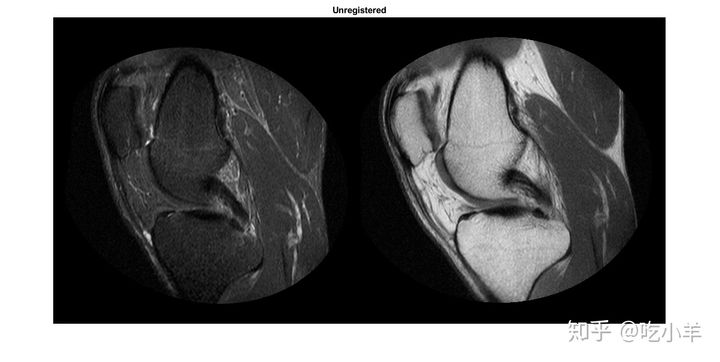
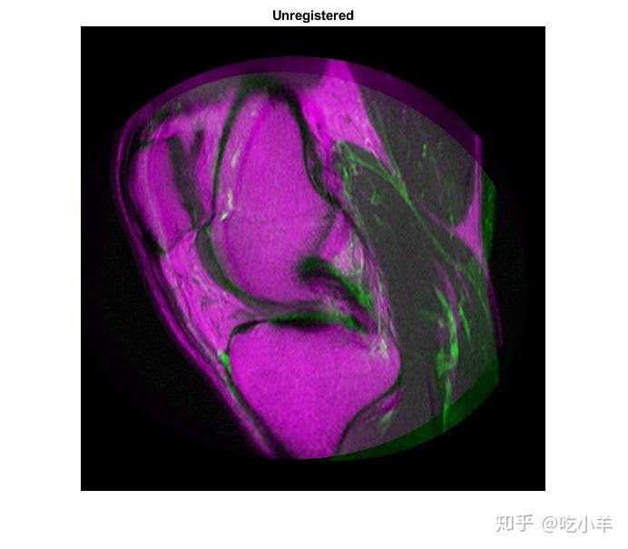
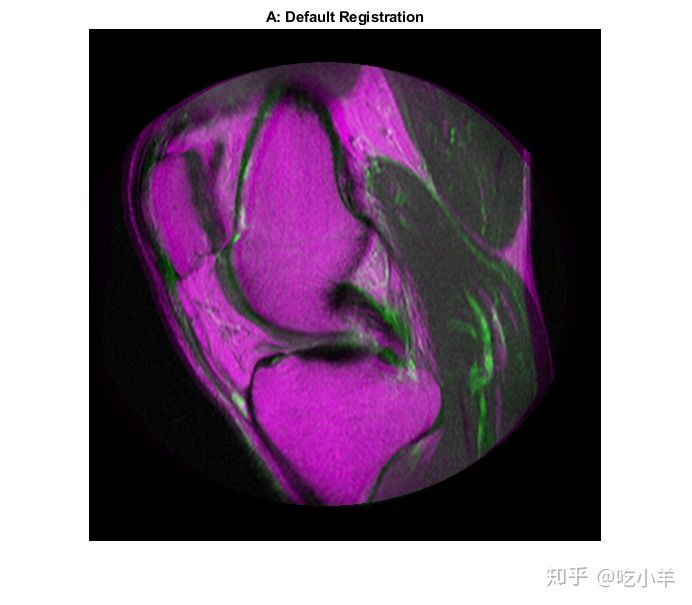
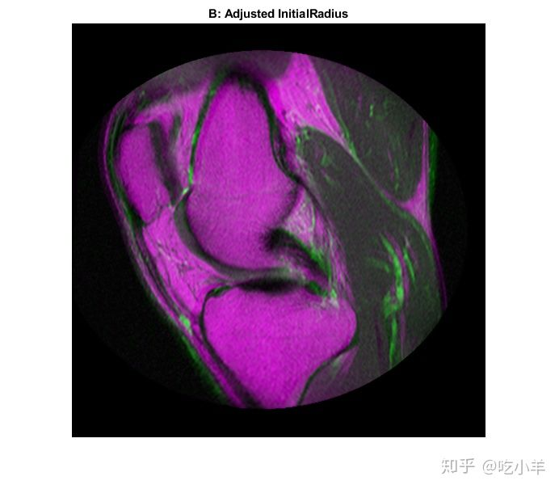
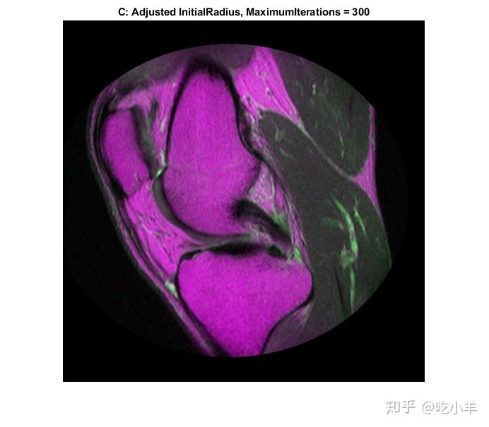
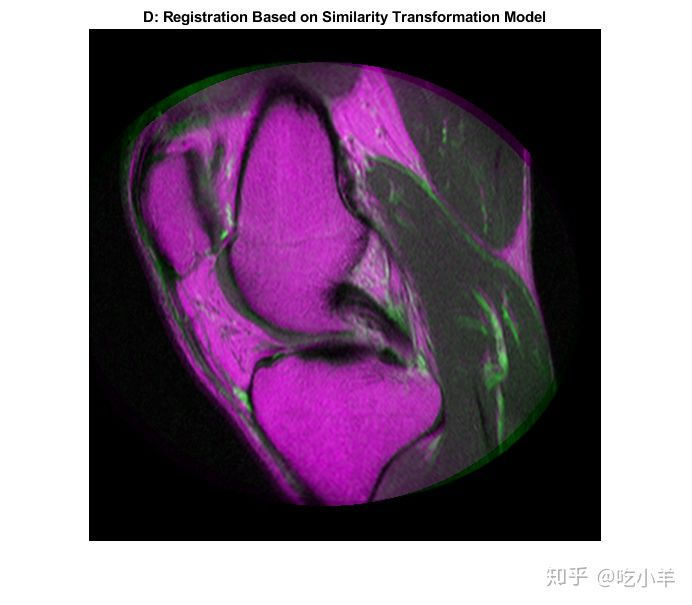

Home
本示例说明如何使用imregister基于强度的图像配准，将两个磁共振（MRI）图像自动对齐到公共坐标系。与某些其他技术不同，该方法无法找到特征或使用控制点。基于强度的配准通常非常适合医学和遥感图像。
步骤1：载入图片
本示例使用两个膝盖的MRI图像。固定图像是自旋回波图像，而运动图像是具有反转恢复的自旋回波图像。同时获取了两个矢状切面，但略有偏离。
fixed = dicomread('knee1.dcm');
moving = dicomread('knee2.dcm');
imshowpair函数对于在配准过程的每个部分可视化图像很有用。用它以蒙太奇的方式分别查看两个图像，或将它们堆叠显示以显示配准失调的数量。
imshowpair(moving,fixed,'montage')
title('Unregistered')

在来自imshowpair的重叠图像中，灰色区域对应于具有相似强度的区域，而洋红色和绿色区域则表示一个图像比另一个图像亮的地方。在某些图像对中，绿色和品红色区域并不总是表示未配准，但是在此示例中，很容易使用颜色信息查看它们的位置。
imshowpair(moving,fixed)
title('Unregistered')

步骤2：设置初始配准
通过imregconfig函数，可以轻松选择与imregister一起使用的正确的优化器和度量配置。优化器和度量变量是对象，其属性控制配准。 这两个图像具有不同的强度分布，这表明是多模配准。
[optimizer,metric] = imregconfig('multimodal');
两个图像之间的变形包括缩放，旋转以及可能的剪切。使用仿射变换来配准图像。
movingRegisteredDefault = imregister(moving,fixed,'affine',optimizer,metric);
显示结果。用默认设置imregister就可以将图像完美对齐的情况很少见。但是，使用它们是确定应该先调整哪些属性的有用方法。
imshowpair(movingRegisteredDefault,fixed)
title('A: Default Registration')

步骤3：改善配准
初始配准不是很好。仍然存在明显的对准不良区域，尤其是沿右边缘的区域。尝试通过调整优化器和度量标准配置属性来改善配准。
disp(optimizer)
registration.optimizer.OnePlusOneEvolutionary
Properties:
GrowthFactor: 1.050000e+00
Epsilon: 1.500000e-06
InitialRadius: 6.250000e-03
MaximumIterations: 100
disp(metric)
registration.metric.MattesMutualInformation
Properties:
NumberOfSpatialSamples: 500
NumberOfHistogramBins: 50
UseAllPixels: 1
The InitialRadius property of the optimizer controls the initial step size used in parameter space to refine the geometric transformation. When multimodal registration problems do not converge with the default parameters, InitialRadius is a good first parameter to adjust. Start by reducing the default value of InitialRadius by a scale factor of 3.5. 所述InitialRadius优化器的属性控制在参数空间用于细调几何变换的初始步长。当多模式配准问题采用默认参数不收敛时，首先调整的参数最好是InitialRadius。先将InitialRadius的默认值减小3.5倍。
optimizer.InitialRadius = optimizer.InitialRadius/3.5; movingRegisteredAdjustedInitialRadius = imregister(moving,fixed,'affine',optimizer,metric);
显示结果。调整InitialRadius有积极的影响。顶部和右侧边缘的图像对齐方式有了明显改善。
imshowpair(movingRegisteredAdjustedInitialRadius,fixed)
title('B: Adjusted InitialRadius')

优化控制的MaximumIterations属性控制可迭代的最大数量。增大MaximumIterations允许配准搜索运行更长的时间，并有可能找到更好的配准结果。如果InitialRadius从最后一步开始使用多次迭代，配准是否会继续改善？
optimizer.MaximumIterations = 300; movingRegisteredAdjustedInitialRadius300 = imregister(moving,fixed,'affine',optimizer,metric);
显示结果。通过重用先前配准的优化器设置InitialRadius，并允许优化器进行大量迭代，可以实现配准的进一步改进。
imshowpair(movingRegisteredAdjustedInitialRadius300,fixed)
title('C: Adjusted InitialRadius, MaximumIterations = 300')

步骤4：使用初始条件来改善配准
当可以为与运动图像和固定图像相关的配准提供良好的初始条件时，基于优化的配准效果最佳。获得改进的配准结果的有用技术是从更简单的转换类型（如）'rigid'开始，然后将所得转换用作更复杂的转换类型（如'affine'）的初始条件。
函数imregtform使用与imregister相同的算法，但是返回几何变换对象作为输出，而不是配准的输出图像。使用imregtform，根据'similarity'模型（平移，旋转和缩放），获得初始变换估计。
修改优化器的MaximumIterations和InitialRadius属性后，先前的配准结果显示出了改进。尝试进一步优化配准时，请在使用初始条件时保留这些优化程序设置。
tformSimilarity = imregtform(moving,fixed,'similarity',optimizer,metric);
由于在默认坐标系（也称为本体坐标系）中正在解决配准，因此请获得定义固定图像的位置和分辨率的默认空间参考对象。
Rfixed = imref2d(size(fixed));
使用imwarp将几何变换应用到imregtform的输出，以移动图像与所述固定图像对齐。使用imwarp中的'OutputView'选项，指定输出重采样图像的世界限制（world limits）和分辨率。将Rfixed指定为'OutputView'，让重新采样的运动图像具有与固定图像相同的分辨率和世界限制作为强制。
movingRegisteredRigid = imwarp(moving,tformSimilarity,'OutputView',Rfixed);
显示结果。
imshowpair(movingRegisteredRigid, fixed)
title('D: Registration Based on Similarity Transformation Model')

输出几何变换的'T'属性定义了变换矩阵，该变换矩阵将移动中的点映射到固定的对应点。
tformSimilarity.T
ans = 3×3
1.0331 -0.1110 0
0.1110 1.0331 0
-51.1491 6.9891 1.0000
使用imregister中的'InitialTransformation'名称/值，通过'affine'转换模型来优化此配准，并将'similarity'结果用作几何转换的初始条件。精确的配准估计包括剪切的可能性。
movingRegisteredAffineWithIC = imregister(moving,fixed,'affine',optimizer,metric,...
'InitialTransformation',tformSimilarity);
显示结果。利用'InitialTransformation'细化imregtform的'similarity'的结果，用一个完整的仿射模型得到一个不错的配准结果。
imshowpair(movingRegisteredAffineWithIC,fixed)
title('E: Registration from Affine Model Based on Similarity Initial Condition')
步骤5：确定何时足够
比较imregister具有不同配置和初始条件的运行结果，很明显，有许多输入参数可以在配准中进行更改，每个输入参数可能导致不同的配准结果。
定量比较配准结果可能很困难，因为没有一种质量指标可以准确描述两个图像的对齐方式。通常，必须通过可视化结果来定性判断注册结果。在以上结果中，C）和E）中的配准结果都非常好，并且很难在视觉上区分。
步骤6：替代可视化
通常，随着多模式注册质量的提高，从视觉上判断注册质量变得更加困难。这是因为强度差异会掩盖未对准区域。有时切换到其他显示模式以imshowpair暴露隐藏的细节（并非总是如此）。
======================================================================
我的测试结果及程序
下面是我测试的代码：

注：本文根据MATLAB官网内容修改而成。